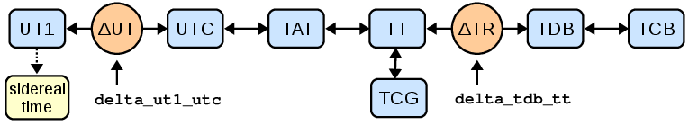

Time and Dates (astropy.time)¶
Introduction¶
The astropy.time package provides functionality for manipulating times and
dates. Specific emphasis is placed on supporting time scales (e.g. UTC, TAI,
UT1, TDB) and time representations (e.g. JD, MJD, ISO 8601) that are used in
astronomy and required to calculate, e.g., sidereal times and barycentric
corrections.
It uses Cython to wrap the C language ERFA time and calendar
routines, using a fast and memory efficient vectorization scheme.
All time manipulations and arithmetic operations are done internally using two
64-bit floats to represent time. Floating point algorithms from [1] are used so
that the Time object maintains sub-nanosecond precision over times spanning
the age of the universe.
| [1] | Shewchuk, 1997, Discrete & Computational Geometry 18(3):305-363 |
Getting Started¶
The basic way to use astropy.time is to create a Time
object by supplying one or more input time values as well as the time format and
time scale of those values. The input time(s) can either be a single scalar like
"2010-01-01 00:00:00" or a list or a numpy array of values as shown below.
In general any output values have the same shape (scalar or array) as the input.
>>> from astropy.time import Time
>>> times = ['1999-01-01T00:00:00.123456789', '2010-01-01T00:00:00']
>>> t = Time(times, format='isot', scale='utc')
>>> t
<Time object: scale='utc' format='isot' value=['1999-01-01T00:00:00.123' '2010-01-01T00:00:00.000']>
>>> t[1]
<Time object: scale='utc' format='isot' value=2010-01-01T00:00:00.000>
The format argument specifies how to interpret the input values,
e.g. ISO or JD or Unix time. The scale argument specifies the time scale for the
values, e.g. UTC or TT or UT1. The scale argument is optional and
defaults to UTC except for Time from epoch formats.
We could have written the above as:
>>> t = Time(times, format='isot')
When the format of the input can be unambiguously determined then the
format argument is not required, so we can simplify even further:
>>> t = Time(times)
Now let’s get the representation of these times in the JD and MJD
formats by requesting the corresponding Time attributes:
>>> t.jd
array([ 2451179.50000143, 2455197.5 ])
>>> t.mjd
array([ 51179.00000143, 55197. ])
The default representation can be changed by setting the format attribute:
>>> t.format = 'fits'
>>> t
<Time object: scale='utc' format='fits' value=['1999-01-01T00:00:00.123(UTC)'
'2010-01-01T00:00:00.000(UTC)']>
>>> t.format = 'isot'
We can also convert to a different time scale, for instance from UTC to
TT. This uses the same attribute mechanism as above but now returns a new
Time object:
>>> t2 = t.tt
>>> t2
<Time object: scale='tt' format='isot' value=['1999-01-01T00:01:04.307' '2010-01-01T00:01:06.184']>
>>> t2.jd
array([ 2451179.5007443 , 2455197.50076602])
Note that both the ISO (ISOT) and JD representations of t2 are different
than for t because they are expressed relative to the TT time scale. Of
course, from the numbers or strings one could not tell; one format in which
this information is kept is the fits format:
>>> print(t2.fits)
['1999-01-01T00:01:04.307(TT)' '2010-01-01T00:01:06.184(TT)']
Finally, some further examples of what is possible. For details, see the API documentation below.
>>> dt = t[1] - t[0]
>>> dt
<TimeDelta object: scale='tai' format='jd' value=4018.00002172>
Here, note the conversion of the timescale to TAI. Time differences can only have scales in which one day is always equal to 86400 seconds.
>>> import numpy as np
>>> t[0] + dt * np.linspace(0.,1.,12)
<Time object: scale='utc' format='isot' value=['1999-01-01T00:00:00.123' '2000-01-01T06:32:43.930'
'2000-12-31T13:05:27.737' '2001-12-31T19:38:11.544'
'2003-01-01T02:10:55.351' '2004-01-01T08:43:39.158'
'2004-12-31T15:16:22.965' '2005-12-31T21:49:06.772'
'2007-01-01T04:21:49.579' '2008-01-01T10:54:33.386'
'2008-12-31T17:27:17.193' '2010-01-01T00:00:00.000']>
>>> t.sidereal_time('apparent', 'greenwich')
<Longitude [ 6.68050179, 6.70281947] hourangle>
Using astropy.time¶
Time object basics¶
In astropy.time a “time” is a single instant of time which is
independent of the way the time is represented (the “format”) and the time
“scale” which specifies the offset and scaling relation of the unit of time.
There is no distinction made between a “date” and a “time” since both concepts
(as loosely defined in common usage) are just different representations of a
moment in time.
Once a Time object is created it cannot be altered internally. In code lingo
it is “immutable.” In particular the common operation of “converting” to a
different time scale is always performed by returning a copy of the original
Time object which has been converted to the new time scale.
Time Format¶
The time format specifies how an instant of time is represented. The currently
available formats are can be found in the Time.FORMATS dict and
are listed in the table below. Each of these formats is implemented as a class
that derives from the base TimeFormat class.
This class structure can be easily adapted and extended by users for
specialized time formats not supplied in astropy.time.
| Format | Class | Example argument |
|---|---|---|
| byear | TimeBesselianEpoch |
1950.0 |
| byear_str | TimeBesselianEpochString |
‘B1950.0’ |
| cxcsec | TimeCxcSec |
63072064.184 |
| datetime | TimeDatetime |
datetime(2000, 1, 2, 12, 0, 0) |
| decimalyear | TimeDecimalYear |
2000.45 |
| fits | TimeFITS |
‘2000-01-01T00:00:00.000(TAI)’ |
| gps | TimeGPS |
630720013.0 |
| iso | TimeISO |
‘2000-01-01 00:00:00.000’ |
| isot | TimeISOT |
‘2000-01-01T00:00:00.000’ |
| jd | TimeJD |
2451544.5 |
| jyear | TimeJulianEpoch |
2000.0 |
| jyear_str | TimeJulianEpochString |
‘J2000.0’ |
| mjd | TimeMJD |
51544.0 |
| plot_date | TimePlotDate |
730120.0003703703 |
| unix | TimeUnix |
946684800.0 |
| yday | TimeYearDayTime |
2000:001:00:00:00.000 |
Note
The TimeFITS format allows for most
but not all of the the FITS standard [2]. Not implemented (yet) is
support for a LOCAL timescale. Furthermore, FITS supports some deprecated
names for timescales; these are translated to the formal names upon
initialization. Furthermore, any specific realization information,
such as UT(NIST) is stored only as long as the time scale is not changed.
| [2] | Rots et al. 2015, A&A 574:A36 |
Changing format¶
The default representation can be changed by setting the format attribute in place:
>>> t = Time('2000-01-02')
>>> t.format = 'jd'
>>> t
<Time object: scale='utc' format='jd' value=2451545.5>
Be aware that when changing format, the current output subformat (see section below) may not exist in the new format. In this case the subformat will not be preserved:
>>> t = Time('2000-01-02', format='fits', out_subfmt='longdate')
>>> t.value
'+02000-01-02(UTC)'
>>> t.format = 'iso'
>>> t.out_subfmt
u'*'
>>> t.format = 'fits'
>>> t.value
'2000-01-02T00:00:00.000(UTC)'
Subformat¶
The time format classes TimeISO,
TimeISOT, TimeFITS, and
TimeYearDayTime support the concept of
subformats. This allows for variations on the basic theme of a format in both
the input string parsing and the output.
The supported subformats are date_hms, date_hm, and date
for all but the TimeFITS format; the latter
does not support data_hm but does support longdate_hms and
longdate for years before the year 0 and after the year 10000. The
table below illustrates these subformats for iso, fits, yday
formats:
| Format | Subformat | Input / output |
|---|---|---|
iso |
date_hms | 2001-01-02 03:04:05.678 |
iso |
date_hm | 2001-01-02 03:04 |
iso |
date | 2001-01-02 |
fits |
date_hms | 2001-01-02T03:04:05.678(UTC) |
fits |
longdate_hms | +02001-01-02T03:04:05.678(UTC) |
fits |
longdate | +02001-01-02(UTC) |
yday |
date_hms | 2001:032:03:04:05.678 |
yday |
date_hm | 2001:032:03:04 |
yday |
date | 2001:032 |
Time from epoch formats¶
The formats cxcsec, gps, and unix are a little special in
that they provide a floating point representation of the elapsed
time in seconds since a particular reference date. These formats have
a intrinsic time scale which is used to compute the elapsed seconds
since the reference date.
| Format | Scale | Reference date |
|---|---|---|
cxcsec |
TT | 1998-01-01 00:00:00 |
unix |
UTC | 1970-01-01 00:00:00 |
gps |
TAI | 1980-01-06 00:00:19 |
Unlike the other formats which default to UTC, if no scale is provided when
initializing a Time object then the above intrinsic scale is used.
This is done for computational efficiency.
Time Scale¶
The time scale (or time standard) is “a specification for measuring time: either the rate at which time passes; or points in time; or both” [3]. See also [4] and [5].
>>> Time.SCALES
('tai', 'tcb', 'tcg', 'tdb', 'tt', 'ut1', 'utc')
| Scale | Description |
|---|---|
| tai | International Atomic Time (TAI) |
| tcb | Barycentric Coordinate Time (TCB) |
| tcg | Geocentric Coordinate Time (TCG) |
| tdb | Barycentric Dynamical Time (TDB) |
| tt | Terrestrial Time (TT) |
| ut1 | Universal Time (UT1) |
| utc | Coordinated Universal Time (UTC) |
| [3] | Wikipedia time standard article |
| [4] | SOFA Time Scale and Calendar Tools (PDF) |
| [5] | http://www.ucolick.org/~sla/leapsecs/timescales.html |
The system of transformation between supported time scales is shown in the figure below. Further details are provided in the Convert time scale section.
Scalar or Array¶
A Time object can hold either a single time value or an array of time values.
The distinction is made entirely by the form of the input time(s). If a Time
object holds a single value then any format outputs will be a single scalar
value, and likewise for arrays. Like other arrays and lists, Time objects
holding arrays are subscriptable, returning scalar or array objects as
appropriate:
>>> from astropy.time import Time
>>> t = Time(100.0, format='mjd')
>>> t.jd
2400100.5
>>> t = Time([100.0, 200.0, 300.], format='mjd')
>>> t.jd
array([ 2400100.5, 2400200.5, 2400300.5])
>>> t[:2]
<Time object: scale='utc' format='mjd' value=[ 100. 200.]>
>>> t[2]
<Time object: scale='utc' format='mjd' value=300.0>
>>> t = Time(np.arange(50000., 50003.)[:, np.newaxis],
... np.arange(0., 1., 0.5), format='mjd')
>>> t
<Time object: scale='utc' format='mjd' value=[[ 50000. 50000.5]
[ 50001. 50001.5]
[ 50002. 50002.5]]>
>>> t[0]
<Time object: scale='utc' format='mjd' value=[ 50000. 50000.5]>
Numpy method analogs¶
For Time instances holding arrays, many of the same methods and attributes
that work on ndarray instances can be used. E.g., one can reshape
Time instances and take specific parts using
reshape(),
ravel(), flatten(),
T, transpose(),
swapaxes(), diagonal(),
squeeze(), take():
>>> t.reshape(2, 3)
<Time object: scale='utc' format='mjd' value=[[ 50000. 50000.5 50001. ]
[ 50001.5 50002. 50002.5]]>
>>> t.T
<Time object: scale='utc' format='mjd' value=[[ 50000. 50001. 50002. ]
[ 50000.5 50001.5 50002.5]]>
Note that similarly to the ndarray methods, all but
flatten() try to use new views of the data,
with the data copied only if that it is impossible (as discussed, e.g., in
the documentation for numpy reshape()).
Some arithmetic methods are supported as well: min(),
max(), ptp(),
sort(), argmin(),
argmax(), and argsort().
E.g.:
>> t.max()
<Time object: scale='utc' format='mjd' value=50002.5>
>> t.ptp(axis=0)
<TimeDelta object: scale='tai' format='jd' value=[ 2. 2.]>
Inferring input format¶
The Time class initializer will not accept ambiguous inputs,
but it will make automatic inferences in cases where the inputs are
unambiguous. This can apply when the times are supplied as datetime
objects or strings. In the latter case
it is not required to specify the format because the available
string formats have no overlap. However, if the format is known in advance
the string parsing will be faster if the format is provided.
>>> from datetime import datetime
>>> t = Time(datetime(2010, 1, 2, 1, 2, 3))
>>> t.format
'datetime'
>>> t = Time('2010-01-02 01:02:03')
>>> t.format
'iso'
Internal representation¶
The Time object maintains an internal representation of time as a pair of
double precision numbers expressing Julian days. The sum of the two numbers is
the Julian Date for that time relative to the given time scale. Users
requiring no better than microsecond precision over human time scales (~100
years) can safely ignore the internal representation details and skip this section.
This representation is driven by the underlying ERFA C-library implementation.
The ERFA routines take care throughout to maintain overall precision of the
double pair. The user is free to choose the way in which total JD is
provided, though internally one part contains integer days and the
other the fraction of the day, as this ensures optimal accuracy for
all conversions. The internal JD pair is available via the jd1
and jd2 attributes:
>>> t = Time('2010-01-01 00:00:00', scale='utc')
>>> t.jd1, t.jd2
(2455197.5, 0.0)
>>> t2 = t.tai
>>> t2.jd1, t2.jd2
(2455197.5, 0.0003935185185185185)
Creating a Time object¶
The allowed Time arguments to create a time object are listed below:
- val : numpy ndarray, list, str, or number
- Data to initialize table.
- val2 : numpy ndarray, list, str, or number; optional
- Data to initialize table.
- format : str, optional
- Format of input value(s)
- scale : str, optional
- Time scale of input value(s)
- precision : int between 0 and 9 inclusive
- Decimal precision when outputting seconds as floating point
- in_subfmt : str
- Unix glob to select subformats for parsing string input times
- out_subfmt : str
- Unix glob to select subformats for outputting string times
- location :
EarthLocationor tuple, optional - If a tuple, 3
Quantityitems with length units for geocentric coordinates, or a longitude, latitude, and optional height for geodetic coordinates. Can be a single location, or one for each input time.
val¶
The val argument specifies the input time or times and
can be a single string or number, or it can be a Python list or numpy array
of strings or numbers. To initialize a Time object based on a specified time,
it must be present. If val is absent (or None), the Time object will
be created for the time corresponding to the instant the object is created.
In most situations one also needs to specify the time scale via the
scale argument. The Time class will never guess the time scale,
so a simple example would be:
>>> t1 = Time(50100.0, scale='tt', format='mjd')
>>> t2 = Time('2010-01-01 00:00:00', scale='utc')
It is possible to create a new Time object from one or more existing time
objects. In this case the format and scale will be inferred from the
first object unless explicitly specified.
>>> Time([t1, t2])
<Time object: scale='tt' format='mjd' value=[ 50100. 55197.00076602]>
val2¶
The val2 argument is available for specialized situations where extremely
high precision is required. Recall that the internal representation of time
within astropy.time is two double-precision numbers that when summed give
the Julian date. If provided the val2 argument is used in combination with
val to set the second the internal time values. The exact interpretation of
val2 is determined by the input format class. As of this release all
string-valued formats ignore val2 and all numeric inputs effectively add
the two values in a way that maintains the highest precision. Example:
>>> t = Time(100.0, 0.000001, format='mjd', scale='tt')
>>> t.jd, t.jd1, t.jd2
(2400100.500001, 2400100.5, 1e-06)
format¶
The format argument sets the time time format, and as mentioned it is
required unless the format can be unambiguously determined from the input times.
scale¶
The scale argument sets the time scale and is required except for time
formats such as plot_date (TimePlotDate) and unix
(TimeUnix). These formats represent the duration
in SI seconds since a fixed instant in time which is independent of time scale.
precision¶
The precision setting affects string formats when outputting a value that
includes seconds. It must be an integer between 0 and 9. There is no effect
when inputting time values from strings. The default precision is 3. Note
that the limit of 9 digits is driven by the way that ERFA handles fractional
seconds. In practice this should should not be an issue.
>>> t = Time('B1950.0', scale='utc', precision=3)
>>> t.byear_str
'B1950.000'
>>> t.precision = 0
>>> t.byear_str
'B1950'
in_subfmt¶
The in_subfmt argument provides a mechanism to select one or more
subformat values from the available subformats for string input. Multiple
allowed subformats can be selected using Unix-style wildcard characters, in
particular * and ?, as documented in the Python fnmatch module.
The default value for in_subfmt is * which matches any available
subformat. This allows for convenient input of values with unknown or
heterogeneous subformat:
>>> Time(['2000:001', '2000:002:03:04', '2001:003:04:05:06.789'])
<Time object: scale='utc' format='yday'
value=['2000:001:00:00:00.000' '2000:002:03:04:00.000' '2001:003:04:05:06.789']>
One can explicitly specify in_subfmt in order to strictly require a
certain subformat:
>>> t = Time('2000:002:03:04', in_subfmt='date_hm')
>>> t = Time('2000:002', in_subfmt='date_hm')
Traceback (most recent call last):
...
ValueError: Input values did not match any of the formats where the
format keyword is optional ['astropy_time', 'datetime',
'byear_str', 'iso', 'isot', 'jyear_str', 'yday']
out_subfmt¶
The out_subfmt argument is similar to in_subfmt except that it applies
to output formatting. In the case of multiple matching subformats the first
matching subformat is used.
>>> Time('2000-01-01 02:03:04', out_subfmt='date').iso
'2000-01-01'
>>> Time('2000-01-01 02:03:04', out_subfmt='date_hms').iso
'2000-01-01 02:03:04.000'
>>> Time('2000-01-01 02:03:04', out_subfmt='date*').iso
'2000-01-01 02:03:04.000'
location¶
This optional parameter specifies the observer location, using an
EarthLocation object or a tuple containing any form that can initialize one:
either a tuple with geocentric coordinates (X, Y, Z), or a tuple with geodetic
coordinates (longitude, latitude, height; with height defaulting to zero).
They are used for time scales that are sensitive to observer location
(currently, only TDB, which relies on the ERFA routine eraDtdb to
determine the time offset between TDB and TT), as well as for sidereal time if
no explicit longitude is given.
>>> t = Time('2001-03-22 00:01:44.732327132980', scale='utc',
... location=('120d', '40d'))
>>> t.sidereal_time('apparent', 'greenwich')
<Longitude 12.00000000000001 hourangle>
>>> t.sidereal_time('apparent')
<Longitude 20.00000000000001 hourangle>
Note
In future versions, we hope to add the possibility to add observatory objects and/or names.
Using Time objects¶
There are four basic operations available with Time objects:
- Get the representation of the time value(s) in a particular time format.
- Get a new time object for the same time value(s) but referenced to a different time scale.
- Calculate the sidereal time corresponding to the time value(s).
- Do time arithmetic involving
Timeand/orTimeDeltaobjects.
Get representation¶
Instants of time can be represented in different ways, for instance as an
ISO-format date string ('1999-07-23 04:31:00') or seconds since 1998.0
(49091460.0) or Modified Julian Date (51382.187451574).
The representation of a Time object in a particular format is available
by getting the object attribute corresponding to the format name. The list of
available format names is in the time format section.
>>> t = Time('2010-01-01 00:00:00', format='iso', scale='utc')
>>> t.jd # JD representation of time in current scale (UTC)
2455197.5
>>> t.iso # ISO representation of time in current scale (UTC)
'2010-01-01 00:00:00.000'
>>> t.unix # seconds since 1970.0 (UTC)
1262304000.0
>>> t.plot_date # Date value for plotting with matplotlib plot_date()
733773.0
>>> t.datetime # Representation as datetime.datetime object
datetime.datetime(2010, 1, 1, 0, 0)
Example:
>>> import matplotlib.pyplot as plt
>>> jyear = np.linspace(2000, 2001, 20)
>>> t = Time(jyear, format='jyear')
>>> plt.plot_date(t.plot_date, jyear)
>>> plt.gcf().autofmt_xdate() # orient date labels at a slant
>>> plt.draw()
Convert time scale¶
A new Time object for the same time value(s) but referenced to a new time
scale can be created getting the object attribute corresponding to the time
scale name. The list of available time scale names is in the time scale
section and in the figure below illustrating the network of time scale
transformations.
Examples:
>>> t = Time('2010-01-01 00:00:00', format='iso', scale='utc')
>>> t.tt # TT scale
<Time object: scale='tt' format='iso' value=2010-01-01 00:01:06.184>
>>> t.tai
<Time object: scale='tai' format='iso' value=2010-01-01 00:00:34.000>
In this process the format and other object attributes like lon,
lat, and precision are also propagated to the new object.
As noted in the Time object basics section, a Time object is immutable and
the internal time values cannot be altered once the object is created. The
process of changing the time scale therefore begins by making a copy of the
original object and then converting the internal time values in the copy to the
new time scale. The new Time object is returned by the attribute access.
Caching¶
The computations for transforming to different time scales or formats can be
time-consuming for large arrays. In order to avoid repeated computations, each
Time or TimeDelta instance caches such transformations internally:
>>> t = Time(np.arange(1e6), format='unix', scale='utc')
>>> time x = t.tt
CPU times: user 263 ms, sys: 4.02 ms, total: 267 ms
Wall time: 267 ms
>>> time x = t.tt
CPU times: user 28 µs, sys: 9 µs, total: 37 µs
Wall time: 32.9 µs
Actions such as changing the output precision or sub-format will clear the cache. In order to explicitly clear the internal cache do:
>>> del t.cache
>>> time x = t.tt
CPU times: user 263 ms, sys: 4.02 ms, total: 267 ms
Wall time: 267 ms
Since these objects are immutable (cannot be changed internally), this should not normally be required.
Transformation offsets¶
Time scale transformations that cross one of the orange circles in the image above require an additional offset time value that is model or observation-dependent. See SOFA Time Scale and Calendar Tools for further details.
The two attributes delta_ut1_utc and
delta_tdb_tt provide a way to set
these offset times explicitly. These represent the time scale offsets
UT1 - UTC and TDB - TT, respectively. As an example:
>>> t = Time('2010-01-01 00:00:00', format='iso', scale='utc')
>>> t.delta_ut1_utc = 0.334 # Explicitly set one part of the transformation
>>> t.ut1.iso # ISO representation of time in UT1 scale
'2010-01-01 00:00:00.334'
For the UT1 to UTC offset, one has to interpolate in observed values provided
by the International Earth Rotation and Reference Systems Service. By default, Astropy is shipped with the final
values provided in Bulletin B, which cover the period from 1962 to shortly
before an astropy release, and these will be used to compute the offset if the
delta_ut1_utc attribute is not set explicitly. For
more recent times, one can download an updated version of IERS B or IERS A (which also has
predictions), and set delta_ut1_utc as described in
get_delta_ut1_utc:
>>> from astropy.utils.iers import IERS_A, IERS_A_URL
>>> iers_a = IERS_A.open(IERS_A_URL)
>>> t.delta_ut1_utc = t.get_delta_ut1_utc(iers_a)
In the case of the TDB to TT offset, most users need only provide the lon
and lat values when creating the Time object. If the
delta_tdb_tt attribute is not explicitly set then
the ERFA C-library routine eraDtdb will be used to compute the TDB to TT
offset. Note that if lon and lat are not explicitly initialized,
values of 0.0 degrees for both will be used.
The following code replicates an example in the SOFA Time Scale and Calendar Tools document. It does the transform from UTC to all supported time scales (TAI, TCB, TCG, TDB, TT, UT1, UTC). This requires an observer location (here, latitude and longitude).:
>>> import astropy.units as u
>>> t = Time('2006-01-15 21:24:37.5', format='iso', scale='utc',
... location=(-155.933222*u.deg, 19.48125*u.deg), precision=6)
>>> t.utc.iso
'2006-01-15 21:24:37.500000'
>>> t.ut1.iso
'2006-01-15 21:24:37.834078'
>>> t.tai.iso
'2006-01-15 21:25:10.500000'
>>> t.tt.iso
'2006-01-15 21:25:42.684000'
>>> t.tcg.iso
'2006-01-15 21:25:43.322690'
>>> t.tdb.iso
'2006-01-15 21:25:42.684373'
>>> t.tcb.iso
'2006-01-15 21:25:56.893952'
Sidereal Time¶
Apparent or mean sidereal time can be calculated using
sidereal_time(). The method returns a Longitude
with units of hourangle, which by default is for the longitude corresponding to
the location with which the Time object is initialized. Like the scale
transformations, ERFA C-library routines are used under the hood, which support
calculations following different IAU resolutions. Sample usage:
>>> t = Time('2006-01-15 21:24:37.5', scale='utc', location=('120d', '45d'))
>>> t.sidereal_time('mean')
<Longitude 13.089521870640212 hourangle>
>>> t.sidereal_time('apparent')
<Longitude 13.089503675087027 hourangle>
>>> t.sidereal_time('apparent', 'greenwich')
<Longitude 5.089503675087027 hourangle>
>>> t.sidereal_time('apparent', '-90d')
<Longitude 23.08950367508703 hourangle>
>>> t.sidereal_time('apparent', '-90d', 'IAU1994')
<Longitude 23.08950365423405 hourangle>
Time Deltas¶
Simple time arithmetic is supported using the TimeDelta class. The
following operations are available:
- Create a TimeDelta explicitly by instantiating a class object
- Create a TimeDelta by subtracting two Times
- Add a TimeDelta to a Time object to get a new Time
- Subtract a TimeDelta from a Time object to get a new Time
- Add two TimeDelta objects to get a new TimeDelta
- Negate a TimeDelta or take its absolute value
- Multiply or divide a TimeDelta by a constant or array
- Convert TimeDelta objects to and from time-like Quantities
The TimeDelta class is derived from the Time class and shares many of its
properties. One difference is that the time scale has to be one for which one
day is exactly 86400 seconds. Hence, the scale cannot be UTC.
The available time formats are:
| Format | Class |
|---|---|
| sec | TimeDeltaSec |
| jd | TimeDeltaJD |
Examples¶
Use of the TimeDelta object is easily illustrated in the few examples below:
>>> t1 = Time('2010-01-01 00:00:00')
>>> t2 = Time('2010-02-01 00:00:00')
>>> dt = t2 - t1 # Difference between two Times
>>> dt
<TimeDelta object: scale='tai' format='jd' value=31.0>
>>> dt.sec
2678400.0
>>> from astropy.time import TimeDelta
>>> dt2 = TimeDelta(50.0, format='sec')
>>> t3 = t2 + dt2 # Add a TimeDelta to a Time
>>> t3.iso
'2010-02-01 00:00:50.000'
>>> t2 - dt2 # Subtract a TimeDelta from a Time
<Time object: scale='utc' format='iso' value=2010-01-31 23:59:10.000>
>>> dt + dt2
<TimeDelta object: scale='tai' format='jd' value=31.0005787037>
>>> import numpy as np
>>> t1 + dt * np.linspace(0, 1, 5)
<Time object: scale='utc' format='iso' value=['2010-01-01 00:00:00.000'
'2010-01-08 18:00:00.000' '2010-01-16 12:00:00.000' '2010-01-24 06:00:00.000'
'2010-02-01 00:00:00.000']>
Time Scales for Time Deltas¶
Above, one sees that the difference between two UTC times is a TimeDelta
with a scale of TAI. This is because a UTC time difference cannot be uniquely
defined unless one knows the two times that were differenced (because of leap
seconds, a day does not always have 86400 seconds). For all other time
scales, the TimeDelta inherits the scale of the first Time object:
>>> t1 = Time('2010-01-01 00:00:00', scale='tcg')
>>> t2 = Time('2011-01-01 00:00:00', scale='tcg')
>>> dt = t2 - t1
>>> dt
<TimeDelta object: scale='tcg' format='jd' value=365.0>
When TimeDelta objects are added or subtracted from Time objects, scales
are converted appropriately, with the final scale being that of the Time
object:
>>> t2 + dt
<Time object: scale='tcg' format='iso' value=2012-01-01 00:00:00.000>
>>> t2.tai
<Time object: scale='tai' format='iso' value=2010-12-31 23:59:27.068>
>>> t2.tai + dt
<Time object: scale='tai' format='iso' value=2011-12-31 23:59:27.046>
TimeDelta objects can be converted only to objects with compatible scales,
i.e., scales for which it is not necessary to know the times that were
differenced:
>>> dt.tt
<TimeDelta object: scale='tt' format='jd' value=364.999999746>
>>> dt.tdb
Traceback (most recent call last):
...
ScaleValueError: Cannot convert TimeDelta with scale 'tcg' to scale 'tdb'
TimeDelta objects can also have an undefined scale, in which case it is
assumed that there scale matches that of the other Time or TimeDelta
object (or is TAI in case of a UTC time):
>>> t2.tai + TimeDelta(365., format='jd', scale=None)
<Time object: scale='tai' format='iso' value=2011-12-31 23:59:27.068>
Barycentric and Heliocentric Light Travel Time Corrections¶
The arrival times of photons at an observatory are not particularly useful for accurate timing work, such as eclipse/transit timing of binaries or exoplanets. This is because the changing location of the observatory causes photons to arrive early or late. The solution is to calculate the time the photon would have arrived at a standard location; either the Solar system barycentre or the heliocentre.
Suppose you observed IP Peg from Greenwich and have a list of times in MJD form, in
the UTC timescale. You then create appropriate Time and SkyCoord objects and
calculate light travel times to the barycentre as follows:
>>> from astropy import time, coordinates as coord, units as u
>>> ip_peg = coord.SkyCoord("23:23:08.55", "+18:24:59.3",
... unit=(u.hourangle, u.deg), frame='icrs')
>>> greenwich = coord.EarthLocation.of_site('greenwich')
>>> times = time.Time([56325.95833333, 56325.978254], format='mjd',
... scale='utc', location=greenwich)
>>> ltt_bary = times.light_travel_time(ip_peg)
If you desire the light travel time to the heliocentre instead then use:
>>> ltt_helio = times.light_travel_time(ip_peg, 'heliocentric')
The method returns an TimeDelta object, which can be added to
your times to give the arrival time of the photons at the barycentre or
heliocentre. Here, one should be careful with the timescales used; for more
detailed information about timescales, see
http://astropy.readthedocs.org/en/stable/time/index.html#time-scale.
The heliocentre is not a fixed point, and therefore the gravity continually changes at the heliocentre. Thus, the use of a relativistic timescale like TDB is not particularly appropriate, and, historically, times corrected to the heliocentre are given in the UTC timescale:
>>> times_heliocentre = times.utc + ltt_helio
Corrections to the barycentre are more precise than the heliocentre, because the barycenter is a fixed point where gravity is constant. For maximum accuracy you want to have your barycentric corrected times in a timescale that has always ticked at a uniform rate, and ideally one whose tick rate is related to the rate that a clock would tick at the barycentre. For this reason, barycentric corrected times normally use the TDB timescale:
>>> time_barycentre = times.tdb + ltt_bary
Interaction with Time-like Quantities¶
Where possible, Quantity objects with units of time are treated as TimeDelta
objects with undefined scale (though necessarily with lower precision). They
can also be used as input in constructing Time and TimeDelta objects, and
TimeDelta objects can be converted to Quantity objects of arbitrary units
of time. Usage is most easily illustrated by examples:
>>> import astropy.units as u
>>> Time(10.*u.yr, format='gps') # time-valued quantities can be used for
... # for formats requiring a time offset
<Time object: scale='tai' format='gps' value=315576000.0>
>>> Time(10.*u.yr, 1.*u.s, format='gps')
<Time object: scale='tai' format='gps' value=315576001.0>
>>> Time(2000.*u.yr, scale='utc', format='jyear')
<Time object: scale='utc' format='jyear' value=2000.0>
>>> Time(2000.*u.yr, scale='utc', format='byear')
... # but not for Besselian year, which implies
... # a different time scale
...
Traceback (most recent call last):
...
ValueError: Input values did not match the format class byear
>>> TimeDelta(10.*u.yr) # With a quantity, no format is required
<TimeDelta object: scale='None' format='jd' value=3652.5>
>>> dt = TimeDelta([10., 20., 30.], format='jd')
>>> dt.to(u.hr) # can convert TimeDelta to a quantity
<Quantity [ 240., 480., 720.] h>
>>> dt > 400. * u.hr # and compare to quantities with units of time
array([False, True, True], dtype=bool)
>>> dt + 1.*u.hr # can also add/subtract such quantities
<TimeDelta object: scale='None' format='jd' value=[ 10.04166667 20.04166667 30.04166667]>
>>> Time(50000., format='mjd', scale='utc') + 1.*u.hr
<Time object: scale='utc' format='mjd' value=50000.0416667>
>>> dt * 10.*u.km/u.s # for multiplication and division with a
... # Quantity, TimeDelta is converted
<Quantity [ 100., 200., 300.] d km / s>
>>> dt * 10.*u.Unit(1) # unless the Quantity is dimensionless
<TimeDelta object: scale='None' format='jd' value=[ 100. 200. 300.]>
Writing a Custom Format¶
Some applications may need a custom Time format, and this capability is
available by making a new subclass of the TimeFormat class.
When such a subclass is defined in your code then the format class and
corresponding name is automatically registered in the set of available time
formats.
The key elements of a new format class are illustrated by examining the
code for the jd format (which is one of the simplest):
class TimeJD(TimeFormat):
"""
Julian Date time format.
"""
name = 'jd' # Unique format name
def set_jds(self, val1, val2):
"""
Set the internal jd1 and jd2 values from the input val1, val2.
The input values are expected to conform to this format, as
validated by self._check_val_type(val1, val2) during __init__.
"""
self._check_scale(self._scale) # Validate scale.
self.jd1, self.jd2 = day_frac(val1, val2)
@property
def value(self):
"""
Return format ``value`` property from internal jd1, jd2
"""
return self.jd1 + self.jd2
As mentioned above, the _check_val_type(self, val1, val2)
method may need to be overridden to validate the inputs as conforming to the
format specification. By default this checks for valid float, float array, or
Quantity inputs. In contrast the iso format class ensures the inputs
meet the ISO format spec for strings.
One special case that is relatively common and easier to implement is a
format that represents the time since a particular epoch. The classic example
is Unix time which is the number of seconds since 1970-01-01 00:00:00 UTC,
not counting leap seconds. What if we wanted that value but do want
to count leap seconds. This would be done by using the TAI scale instead
of the UTC scale. In this case we inherit from the
TimeFromEpoch class and define a few class attributes:
>>> from astropy.time.formats import erfa, TimeFromEpoch
>>> class TimeUnixLeap(TimeFromEpoch):
... """
... Seconds from 1970-01-01 00:00:00 TAI. Similar to Unix time
... but this includes leap seconds.
... """
... name = 'unix_leap'
... unit = 1.0 / erfa.DAYSEC # in days (1 day == 86400 seconds)
... epoch_val = '1970-01-01 00:00:00'
... epoch_val2 = None
... epoch_scale = 'tai' # Scale for epoch_val class attribute
... epoch_format = 'iso' # Format for epoch_val class attribute
>>> t = Time('2000-01-01')
>>> t.unix_leap
946684832.0
>>> t.unix_leap - t.unix
32.0
Going beyond this will probably require looking at the astropy code for more guidance, but if you get stuck the astropy developers are more than happy to help. If you write a format class that is widely useful then we might want to include it in the core!
Timezones¶
When a Time object is constructed from a timezone-aware
datetime, no timezone information is saved in the
Time object. However, Time objects can be
converted to timezone-aware datetime objects:
>>> from datetime import datetime
>>> from astropy.time import Time, TimezoneInfo
>>> import astropy.units as u
>>> utc_plus_one_hour = TimezoneInfo(utc_offset=1*u.hour)
>>> dt_aware = datetime(2000, 1, 1, 0, 0, 0, tzinfo=utc_plus_one_hour)
>>> t = Time(dt_aware) # Loses timezone info, converts to UTC
>>> print(t) # will return UTC
1999-12-31 23:00:00
>>> print(t.to_datetime(timezone=utc_plus_one_hour)) # to timezone-aware datetime
2000-01-01 00:00:00+01:00
Timezone database packages, like pytz
for example, may be more convenient to use to create tzinfo
objects used to specify timezones rather than the TimezoneInfo
object.
Reference/API¶
astropy.time Package¶
Classes¶
OperandTypeError(left, right[, op]) |
|
ScaleValueError |
|
Time(val[, val2, format, scale, precision, ...]) |
Represent and manipulate times and dates for astronomy. |
TimeBesselianEpoch(val1, val2, scale, ...[, ...]) |
Besselian Epoch year as floating point value(s) like 1950.0 |
TimeBesselianEpochString(val1, val2, scale, ...) |
Besselian Epoch year as string value(s) like ‘B1950.0’ |
TimeCxcSec(val1, val2, scale, precision, ...) |
Chandra X-ray Center seconds from 1998-01-01 00:00:00 TT. |
TimeDatetime(val1, val2, scale, precision, ...) |
Represent date as Python standard library datetime object |
TimeDecimalYear(val1, val2, scale, ...[, ...]) |
Time as a decimal year, with integer values corresponding to midnight of the first day of each year. |
TimeDelta(val[, val2, format, scale, copy]) |
Represent the time difference between two times. |
TimeDeltaFormat(val1, val2, scale, ...[, ...]) |
Base class for time delta representations |
TimeDeltaJD(val1, val2, scale, precision, ...) |
Time delta in Julian days (86400 SI seconds) |
TimeDeltaSec(val1, val2, scale, precision, ...) |
Time delta in SI seconds |
TimeEpochDate(val1, val2, scale, precision, ...) |
Base class for support floating point Besselian and Julian epoch dates |
TimeEpochDateString(val1, val2, scale, ...) |
Base class to support string Besselian and Julian epoch dates such as ‘B1950.0’ or ‘J2000.0’ respectively. |
TimeFITS(val1, val2, scale, precision, ...) |
FITS format: “[±Y]YYYY-MM-DD[THH:MM:SS[.sss]][(SCALE[(REALIZATION)])]”. |
TimeFormat(val1, val2, scale, precision, ...) |
Base class for time representations. |
TimeFromEpoch(val1, val2, scale, precision, ...) |
Base class for times that represent the interval from a particular epoch as a floating point multiple of a unit time interval (e.g. |
TimeGPS(val1, val2, scale, precision, ...[, ...]) |
GPS time: seconds from 1980-01-06 00:00:00 UTC For example, 630720013.0 is midnight on January 1, 2000. |
TimeISO(val1, val2, scale, precision, ...[, ...]) |
ISO 8601 compliant date-time format “YYYY-MM-DD HH:MM:SS.sss...”. |
TimeISOT(val1, val2, scale, precision, ...) |
ISO 8601 compliant date-time format “YYYY-MM-DDTHH:MM:SS.sss...”. |
TimeJD(val1, val2, scale, precision, ...[, ...]) |
Julian Date time format. |
TimeJulianEpoch(val1, val2, scale, ...[, ...]) |
Julian Epoch year as floating point value(s) like 2000.0 |
TimeJulianEpochString(val1, val2, scale, ...) |
Julian Epoch year as string value(s) like ‘J2000.0’ |
TimeMJD(val1, val2, scale, precision, ...[, ...]) |
Modified Julian Date time format. |
TimePlotDate(val1, val2, scale, precision, ...) |
Matplotlib plot_date input: |
TimeString(val1, val2, scale, precision, ...) |
Base class for string-like time representations. |
TimeUnique(val1, val2, scale, precision, ...) |
Base class for time formats that can uniquely create a time object without requiring an explicit format specifier. |
TimeUnix(val1, val2, scale, precision, ...) |
Unix time: seconds from 1970-01-01 00:00:00 UTC. |
TimeYearDayTime(val1, val2, scale, ...[, ...]) |
Year, day-of-year and time as “YYYY:DOY:HH:MM:SS.sss...”. |
TimezoneInfo([utc_offset, dst, tzname]) |
Subclass of the tzinfo object, used in the to_datetime method to specify timezones. |
Class Inheritance Diagram¶
![Inheritance diagram of astropy.time.core.OperandTypeError, astropy.time.core.ScaleValueError, astropy.time.core.Time, astropy.time.formats.TimeBesselianEpoch, astropy.time.formats.TimeBesselianEpochString, astropy.time.formats.TimeCxcSec, astropy.time.formats.TimeDatetime, astropy.time.formats.TimeDecimalYear, astropy.time.core.TimeDelta, astropy.time.formats.TimeDeltaFormat, astropy.time.formats.TimeDeltaJD, astropy.time.formats.TimeDeltaSec, astropy.time.formats.TimeEpochDate, astropy.time.formats.TimeEpochDateString, astropy.time.formats.TimeFITS, astropy.time.formats.TimeFormat, astropy.time.formats.TimeFromEpoch, astropy.time.formats.TimeGPS, astropy.time.formats.TimeISO, astropy.time.formats.TimeISOT, astropy.time.formats.TimeJD, astropy.time.formats.TimeJulianEpoch, astropy.time.formats.TimeJulianEpochString, astropy.time.formats.TimeMJD, astropy.time.formats.TimePlotDate, astropy.time.formats.TimeString, astropy.time.formats.TimeUnique, astropy.time.formats.TimeUnix, astropy.time.formats.TimeYearDayTime, astropy.time.formats.TimezoneInfo](../_images/inheritance-75cef9d45b0de954155ce9340dac1fd785735d93.svg)
Acknowledgments and Licenses¶
This package makes use of the ERFA Software ANSI C library. The copyright of the ERFA software belongs to the NumFOCUS Foundation. The library is made available under the terms of the “BSD-three clauses” license.
The ERFA library is derived, with permission, from the International Astronomical Union’s “Standards of Fundamental Astronomy” library, available from http://www.iausofa.org.